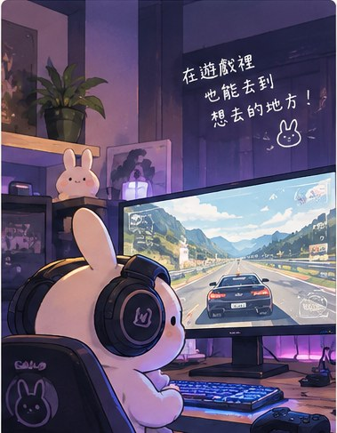

SYSTEM PROFILE // 2026PLAYER LOADOUT · 01
GAMES, GEAR & DAILY DRIVERS
我的遊戲裝備。
遊戲之外，也把每天使用的主機、桌面配備和手感設定收在這裡。鍵盤軸體與機殼散熱配置都可以往下深入看看。

01 / CORE SYSTEM
主機與顯示
桌機平台、散熱器與螢幕
- CPU
- AMD R5 5500X3D
- MB
- MSI B450 Gaming Pro Carbon AC
- RAM
- Crucial Ballistix DDR4-3200
16G (8G x 2) - GPU
- Acer Predator Arc A750 8G OC
- PSU
- Montech Century II 650W
- OS
- Win 11 Pro 26H2 (ReviOS)
- MONITOR
- BenQ GW2790Q
02 / DESK & INPUT
桌面周邊
操控、聆聽與收音
- MOUSE
- Logitech G304 X Superlight
- CONTROLLER
- Flydigi Vader 5S
(黑武士 5S) - DAC
- iBasso DC04 Ultra
- HEADPHONE
- Audio-Technica ATH-R50x
- IEM
- iBasso Cookie Ti
- MIC
- HyperX SoloCast